From LLM inference to production deployment
Giovanni Fontana
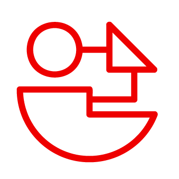
Application architecture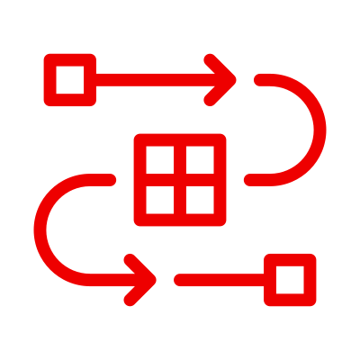
The AI layer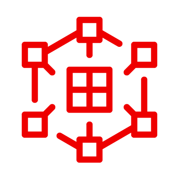
OpenShift AI + vLLM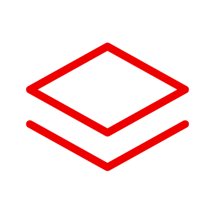
OpenShift platform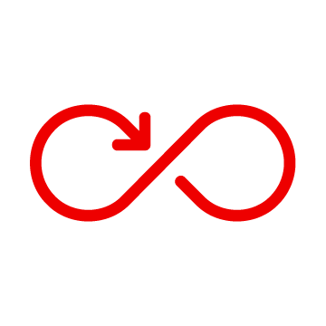
GitOps + ArgoCDAI applications need more than just a model
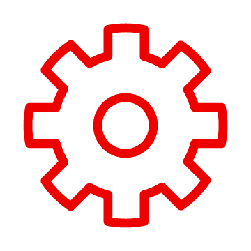
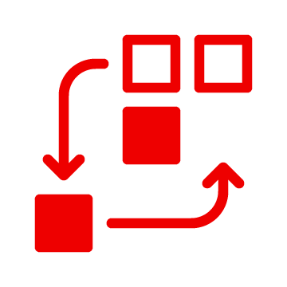
Orchestrates tools, data & reasoning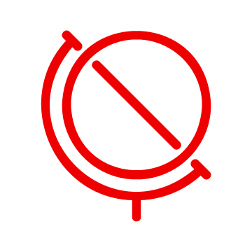
Live data access: weather, currencies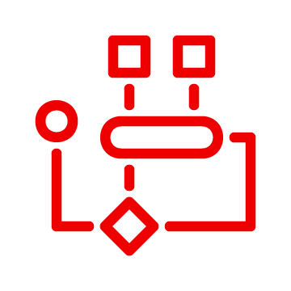
Multi-step workflows with state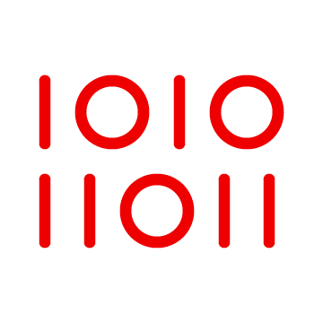
Conversation memory & context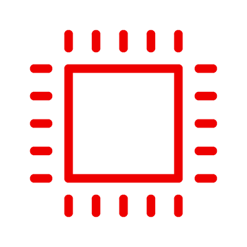
GPU resources & low latency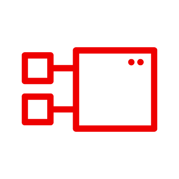
Isolated, scalable servicesSmart Travel Buddy — an AI travel planning agent built on Red Hat technologies
Conversational AI agent for personalized travel itineraries
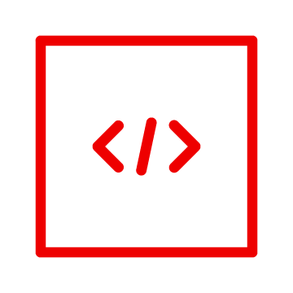
React 19 + Tailwind CSS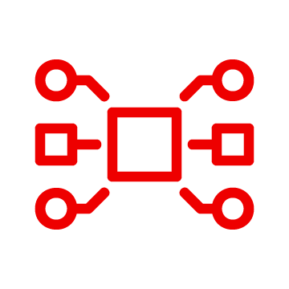
FastAPI + LangGraph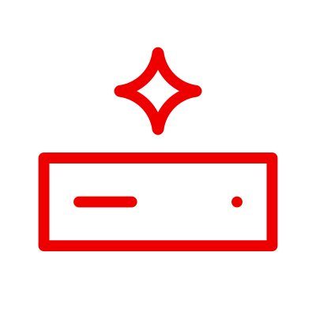
3 MCP tool servers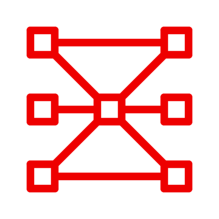
Local LLM via vLLM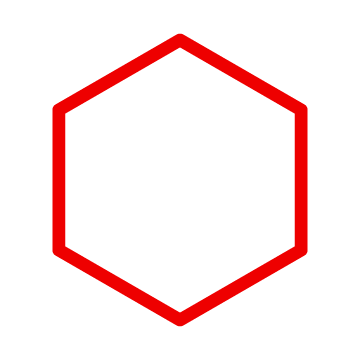
7 containers on OpenShift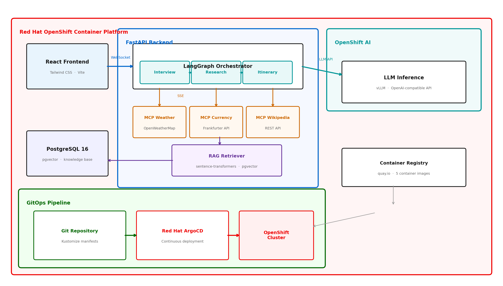
How the Red Hat stack powers every layer of this application
Local LLM serving with GPU acceleration
Llama, Mistral, Granite — same endpoint, different weights
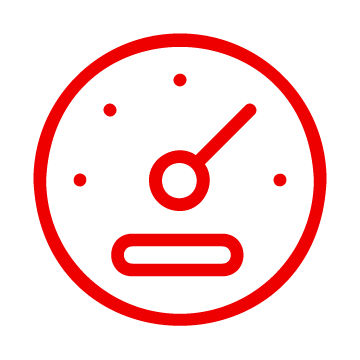
Co-located low latency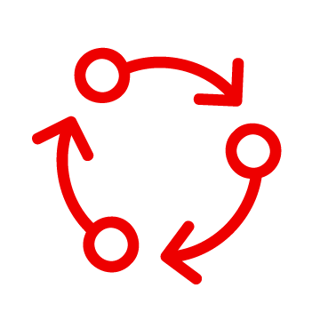
Model lifecycle management7 microservices, one platform
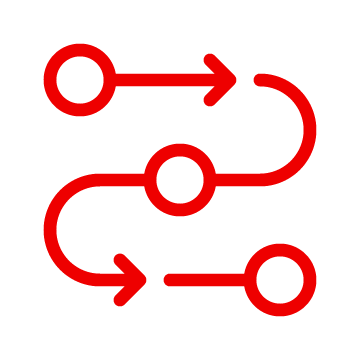
Seed job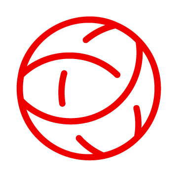
Service discovery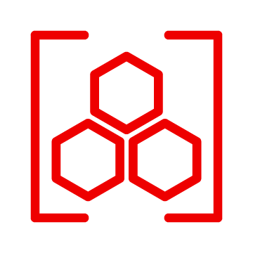
Quay.io registry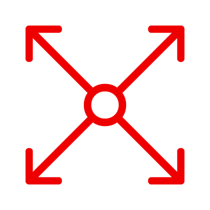
Resource limits per pod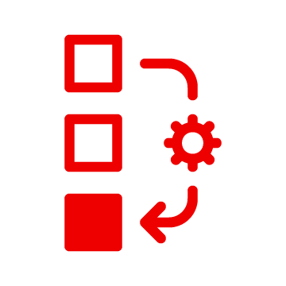
Zero-downtime deploys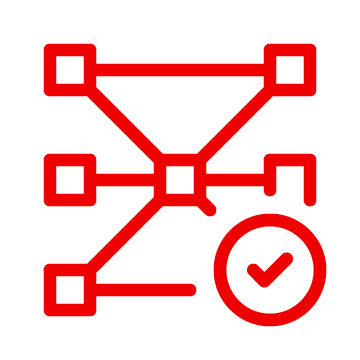
Data never leaves your infrastructure
Live walkthrough of Smart Travel Buddy on OpenShift
Red Hat is the world's leading provider of enterprise open source software solutions. Award-winning support, training, and consulting services make Red Hat a trusted adviser to the Fortune 500.